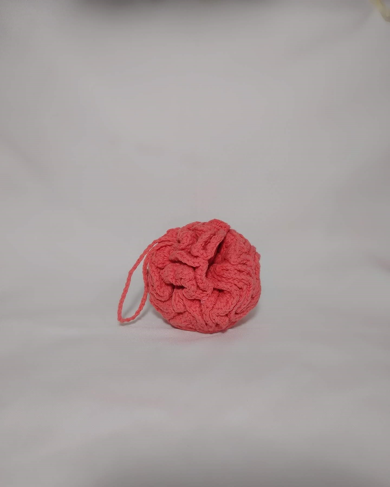
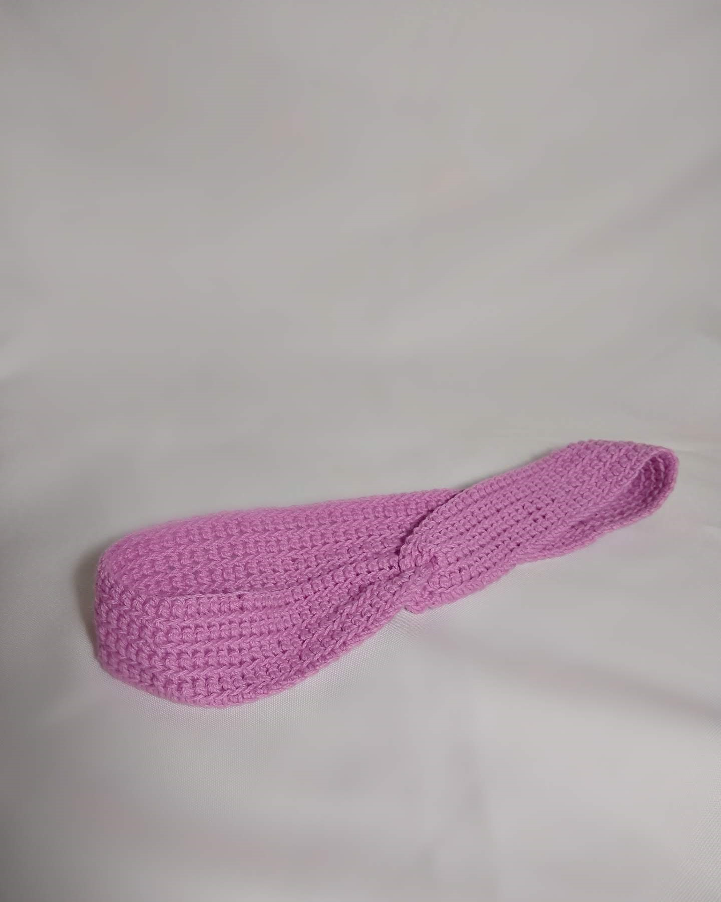

-

Esponja de baño
La esponja de baño tejida al crochet es una opción elegante para tu rutina de higiene personal. Hecha de hilos suaves y absorbentes. Su tejido proporciona un suave masaje en la piel mientras elimina las impurezas.
-

Discos desmaquillantes
Estos discos están tejidos con hilos suaves y absorbentes que permiten retirar suavemente el maquillaje. Son reutilizables y respetuosos con el medio ambiente. Cada disco presenta una textura ligeramente rugosa para una limpieza eficaz. Vienen en una variedad de colores y patrones, lo que agrega un toque de elegancia a tu rutina de belleza.
-

Vincha
La vincha tejida al crochet es un accesorio para el cabello que combina comodidad y estilo. Está confeccionada con hilos suaves que no dañan el cabello y presenta un patrón atractivo. Es ideal para mantener el cabello fuera del rostro mientras te maquillas o limpias tu rostro. La elasticidad del tejido asegura un ajuste cómodo.